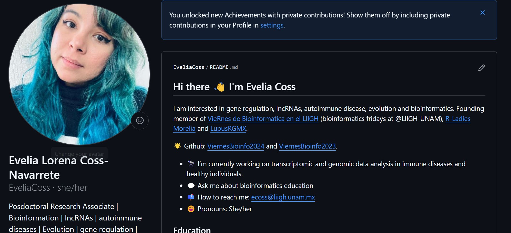

31 Resumen y Práctica Final
31.1 Comandos usados en Github y RStudio

git add:Agregar cambiosgit status:Revisamos el estado del proyectogit commit:comentar los cambiosgit checkout:Pordemos regresar cambios o cambiar de rama.
En Git, los comandos git pull y git push son utilizados para sincronizar y actualizar el contenido de un repositorio:
git pull:Actualiza la versión local de un repositorio desde otro remoto (en R studio flecha azul).git push:Carga contenido en un repositorio remoto (en R studio flecha verde)
31.2 Página de inicio en GitHub
- En GitHub, crea un repositorio con el mismo nombre de usuario. Ejemplo: Si el usuario es EveliaCoss y entonces el repositorio se llama EveliaCoss, dandonos la siguiente liga https://github.com/EveliaCoss/EveliaCoss
- Agrega un README al repositorio con tu informacion. Por Default ya trae una plantilla, modificala y adaptala a tu gusto.
- Visualiza como cambia tu inicio en el Github.
Puedes aprender a realizar esta actividad paso a paso, siguiendo este tutorial.

31.3 GitHub primero, RStudio después…
- En RStudio crea un nuevo proyecto: File > New Project > Version Control > Git. Ahi pega el URL del repositorio
https://github.com/mi_usuario/mi_repositorio.git. Da click en Create Project.
Esto nos generará los siguientes elementos:
Un directorio nuevo
Un repositorio Git enlazado a al repositorio de GitHub
Un proyecto en RStudio
Con este procedimiento ya no es necesario preocuparse por configurar controles remotos Git y rastrear ramas en la línea de comandos.
31.4 Comentar, pull y push en Rstudio

Con la flecha azul podemos hacer pull (RECUERDA HACERLO ANTES DE HACER UN PUSH), y con la flecha verde un push. Para poder comentar y hacer push debemos marcar con una palomita mediante un click en las pequeñas cajas blancas de la columna Staged, damos click en commit lo cual nos abre la siguiente ventana.

Volvemos a dar click en commit, y finalizamos con push (flecha verde).
31.5 Ediciones desde R de la página de inicio en GitHub
- Sincroniza el repositorio con el nombre de tu usuario en GitHub (ejemplo: EveliaCoss/EveliaCoss) con RStudio
- Realiza los cambios desde R y subelos a GitHub.
- Visualiza como cambia tu inicio en el Github.
También existe esta página llamada Oh Shit, Git!?!. En donde puedes aprender sobre los errores comunes en GitHub.

Imagen tomada de Allison Horst.
31.6 Referencias
- Evelia tutorial:Workshop sobre Git / Github 2025
- Haydee tutorial: Temas Selectos de Análisis Numérico y Computación Científica: Computo científico para el análisis de datos
- Alejandra Medina tutorial: Control de versiones con GitHub y RStudio